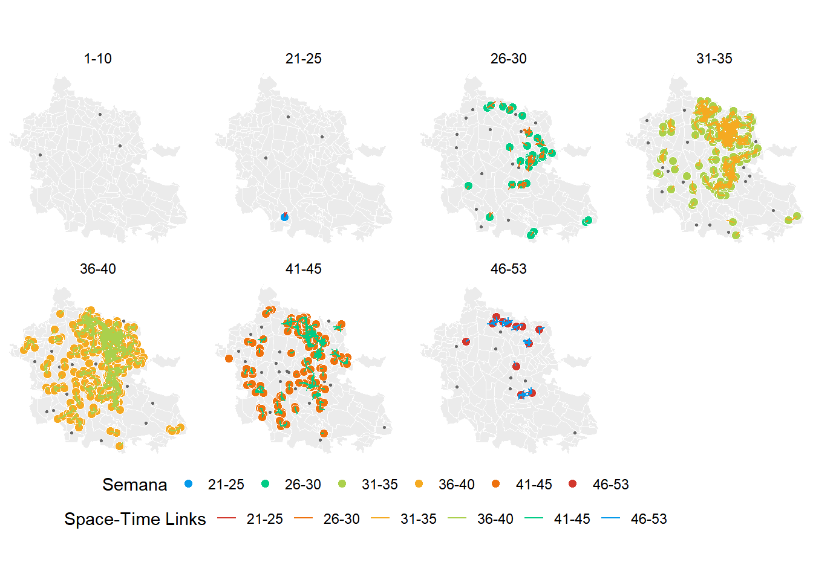

Capítulo 6 Clusters de Transmisión en R
6.1 Identificación de los cluster de transmisión en R
Dado que los pasos del uno al cuatro han sido abordados en la sección dos (hotspots de casos y del vector), el procedimiento lo iniciamos con el paso 5.
6.2 Generar los archivos cas y geo.
Para generar los archivos cas y geo, primero se carga la base de datos de los casos geocodificados, segundo se cargan dos funciones y por último se aplican las funciones. En esté último paso, se define la localidad, el identificador único del estado y la carpeta donde se van a guardar los archivos cas y geo.
6.2.1 Paso 1. Subir la base de datos geocodificada.
load("C:/Users/felip/OneDrive/proyects/geocoding_mex/geocodemx_xalapa_ver/geocodemx_xalapa_ver/8.RData/geo_positive_den_xal_2008_2020.RData")6.2.2 Paso 2. Subir las funciones .
# Step 5.2. cargamos las funciones ####
source('C:/Users/felip/OneDrive/proyects/hotspots/3.Functions/write_cas_geo.R')
source('C:/Users/felip/OneDrive/proyects/satscan/3.Functions/cas_geo.R')6.2.3 Paso 3. Aplicar las funciones.
library(magrittr)
library(sf)## Linking to GEOS 3.9.0, GDAL 3.2.1, PROJ 7.2.1write_cas_geo(y = xy %>%
dplyr::mutate(year = lubridate::year(onset)) %>%
dplyr::filter(year == 2019),
locality = c("Xalapa de Enriquez"),
cve_ent = "30",
dir = "cas&geo_files")## although coordinates are longitude/latitude, st_intersects assumes that they are planar## although coordinates are longitude/latitude, st_intersects assumes that they are planar
## although coordinates are longitude/latitude, st_intersects assumes that they are planar## rsatscan only does anything useful if you have SaTScan## See http://www.satscan.org/ for free access6.3 Definir los parametros del input, análisis y resultado (output).
Una vez generado los archivos cas y geo, podemos definir los parámetros para correr space-time análisis con rsatscan. el proceso es realizado en tres pasos. En el paso uno subimos los archivos geo y cas que se generaron en el subcapítulo anterior. En el paso dos usamos la funcion denhotspots::satscanR y definimos los argumentos.
| Argumento | Definición |
|---|---|
| cas_file | Es el archivo cas |
| geo_file | Es el archivo geo |
| start_date | Es la fecha inicio del primer caso |
| end_date | Es la fecha de inicio del último caso |
| spatial_window | Es la resolución espacial (km) |
| spatial_window | Es la resolución tempora (días) |
La resolución temporal y espacial para el space-time análisis de dengue por conveniencia estamos considerando 20 días y 400 metros, respectivamente.
library(rsatscan)
# 1. Subir el archivo cas y geo generado con la función write_cas_geo
load("C:/Users/felip/Dropbox/manual_hotspots_veracruz/9.cas&geo_files/Xalapa de Enriquez302019.RData")
# 2. Aplicar la función denhotspots::satscanR
x <- denhotspots::satscanR(cas_file = x_cas,
geo_file = x_geo,
start_date = stringr::str_replace_all(min(x_cas$date),
pattern = "-", replacement = "/"),
end_date = stringr::str_replace_all(max(x_cas$date),
pattern = "-", replacement = "/"),
spatial_window = 0.4,
temporal_window = 20)La selección de los cluster de transmisión y los casos con valores de p menores a 0.05, y su respectiva visualización se realiza con la función denhotspots::staticmap_satscan. Esta función tiene la capacidad de visualizar los resultados del space-time analisis con rsatscan o SaTScan. En nuestro análisis con rsatscan definimos los argumentos de acuerdo a la siguiente tabla y visualizamos.
| Argumento | Definición |
|---|---|
| x | Es la base de casos de dengue. Esta fue generado en el paso 5. |
| rsatscan | es el resultado del space-time con rsatscan |
| satscan | Es un valor logico para definir el resultado con rsatscan (FALSE) o SaTScan (TRUE) |
| locality | Es el nombre de la localidad |
| cve_edo | Es el indentificador único del estado |
| path_shapeclust | Cuando satscan es TRUE, se define el path donde se alojan el archivo shapeclust |
| path_gis | Cuando satscan es TRUE, se define el path donde se alojan el archivo gis de SaTScan |
library(sf)
library(magrittr)
denhotspots::staticmap_satscan(x = x_data, # este objeto se subió en el paso paso anterior
locality = "Xalapa de Enriquez",
cve_edo = "30",
satscan = FALSE,
rsatscan = x) # x es el resultado de aplicar satscanR## although coordinates are longitude/latitude, st_intersects assumes that they are planar
## although coordinates are longitude/latitude, st_intersects assumes that they are planar
## although coordinates are longitude/latitude, st_intersects assumes that they are planar## Loading required package: sp## although coordinates are longitude/latitude, st_intersects assumes that they are planar
## although coordinates are longitude/latitude, st_intersects assumes that they are planar
## although coordinates are longitude/latitude, st_intersects assumes that they are planar
## although coordinates are longitude/latitude, st_intersects assumes that they are planar
## although coordinates are longitude/latitude, st_intersects assumes that they are planar
## although coordinates are longitude/latitude, st_intersects assumes that they are planar
El mapa muestra todos los cluster circulares de la transmisión de dengue. En el mapa se representan en azul los clusters no significativos (p > 0.05), en rojo se representan los clusters significativos (p < 0.05) y los puntos de color gris son los casos.